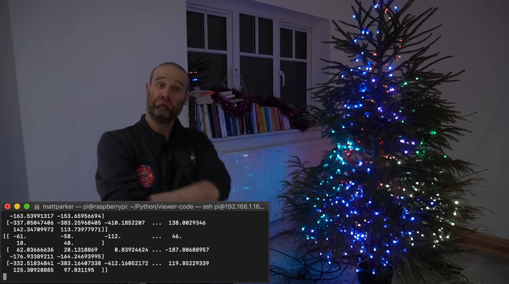

3D-Programmable Christmas Tree Lights
A festive, coding project
For the holidays, stand-up mathematician, Matt Parker developed a Christmas Tree that maps the 3D coordinates of each light. This allows each light on the tree to be individually controlled based on their location along with the lights' base capability to individually be turned on and off. The lights are rigged using a Raspberry Pi Zero. This allows code to affect the lights which was made using an API that sets the in-code position lights to their position on the tree's geometry. Creating the tree was challenging due to the fact that Parker would need to determine where each light was in the tree's 3D space. To do this, Parker employed the use of a code that allowed him to iterate through each light and correct its 3D coordinates.

Parker created this project as a festive coder's livestream where users would attend and submit their code to the tree live. Parker supplied his viewers with sample functions and diagrams for which to assist with the creation of code for the tree in advance of the livestream. The audience would be able to test and display their 3D-Programming skills to Parker's audience and show their creativity on an interactive Christmas Tree. This created a fun, playground-like experience for the viewers of the stream and a sort of competition to make the most impressive effects.
Overall, I believe that this project was great form of interactive art that allowed its audience to employ their creativity onto it. It allowed the viewer to make the art in their desired image - they only needed the right skills to use it properly. I am sad that I missed the opportunity to participate in the